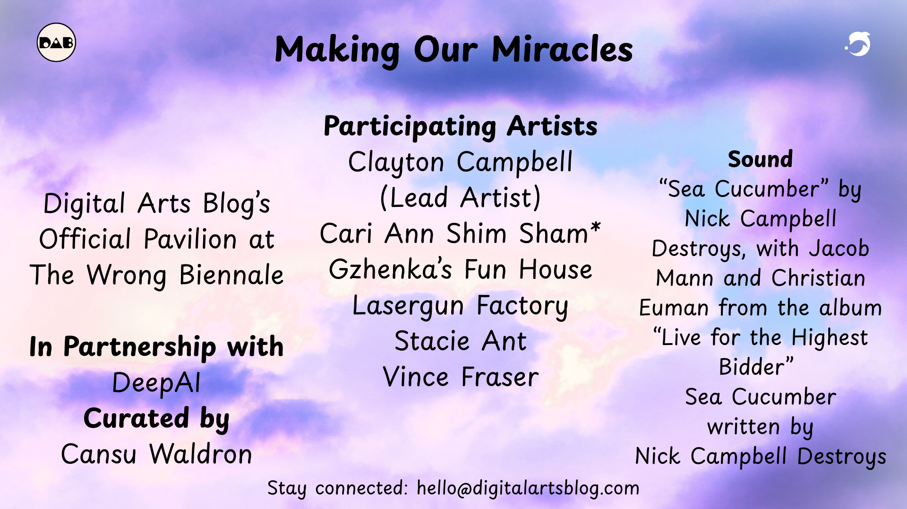
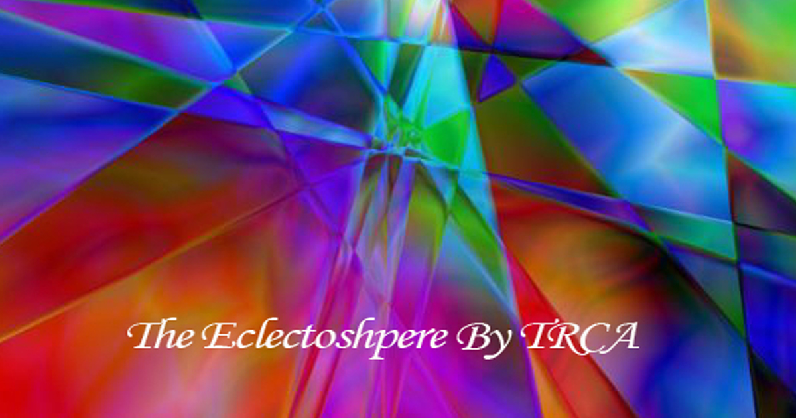

Bienvenue à la Kessler Gallery — un espace où l’art rencontre la nature. Explorez la beauté, la force et la douceur du monde animal.
11.10.2025
Making Our Miracles
A digital art exhibition of personal miracle stories reimagined as contemporary art — preserving moments of transformation for all to witness.
11.10.2025

The Eclectoshpere
Compilation of art by Jason Greiner / TRCA in various genres from Painting to photography to graphic design and AI. This is intended as a feast for your senses.
11.10.2025

Exploring Horizons: Our Erasmus Adventure
Welcome! Explore a vibrant collection of moments capturing growth, adventure, and the power of cultural exchange in the Erasmus journey.